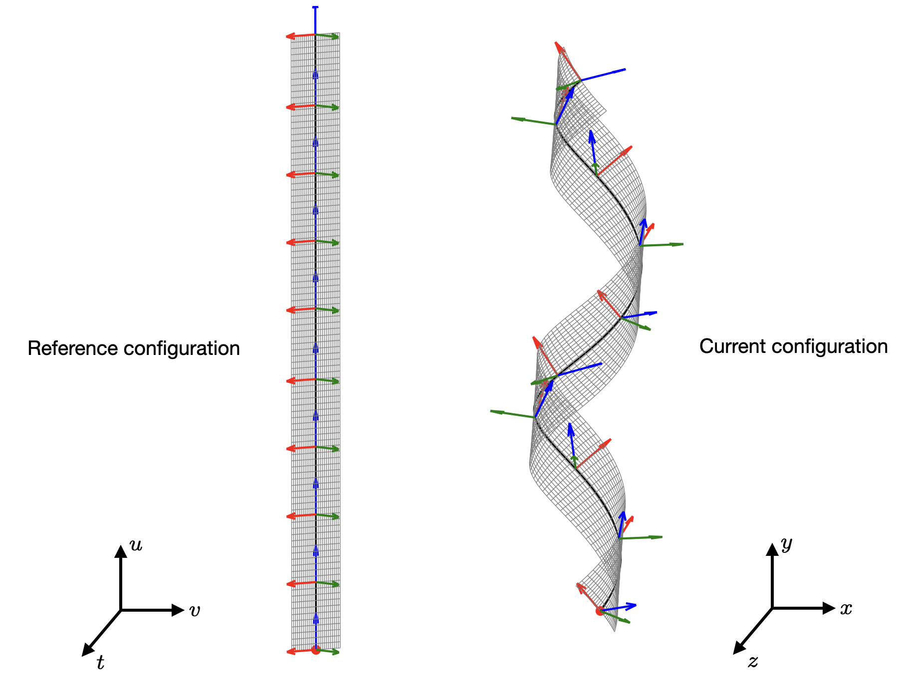

Ribbon equations#
Generating NPL configurations#
We are interested in generating NPL configurations for specified values of curvatures. We will not consider the ligands explicitly, though the method can generate ligand-coated NPLs as well (assuming that the curvatures are not so large that bond lengths alter significatly). NPLs are modeled as ribbons, following Panyukov & Rabin (2000), Rappaport & Rabin (2007), and Grossman et al (2018). The length \(L\), width \(W\), and thickness \(t\) of the ribbon are such that \(L >> W >> t\), where the \(>>\) is usually thought of as a factor of 10. As the width is small, the curvature of the ribbon is governed by that of the centerline. Let the centerline curature along the ribbon length be \(l\), and that along the width be \(n\). In addition, the centerline twist is is \(m\). All three curvatures can be functions of the distance along the centerline.
We will assign a Darboux frame \([\bm{d}_1, \bm{d}_2, \bm{d}_3]\) to the centerline as was done in the references cited earlier. The frame vector \(\bm{d}_1\) points along the width of the ribbon, \(\bm{d}_2\) is the outward normal to the middle surface, and \(\bm{d}_3\) is tangent to the centerline. Note that the familiar Frenet frame of space curves cannot be used here as the centerline lies on a surface. This surface is the midplane of the ribbon. However, relations exist between the Frenet frame and the Darboux frame, see, e.g. the presentation in Chapter 3 of Audoly’s book, or even better Chapter 6 of Koenderink’s book (This book is awesome!). Rappaport & Rabin (2007) also discuss the non-applicability of the Frenet frame.
We begin with a flat reference geometry. The parameters in the reference configurations are \(u\), \(v\), and \(w\) such that \(u \in [0,L]\), \(v \in [-W/2, W/2]\), and \(w \in [-t/2, t/2]\), i.e. \(u\) is the arc length of the centerline. Our intention is to specify the curvatures \(l\), \(m\), and \(n\) such that we can contruct surfaces similar to that shown in the right panel below from that shown in the left panel. In both the panels, the Darboux frame is indicated along the centerline (shown as the dark curve).
{kind=link}

This is a schematic.#
The centerline in the current configuration is constructed by following the evolution of the Darboux frame with respect to the arc length from \(u = 0\) to \(u = L\). The frame evolution equations are as follows:
These above three equations need to augmented with the following three equations to obtain the centerline coordinates \(\bm{R}(u,0,0) = [X, Y, Z]^T\) in the current configuration.
Once the centerline is obtained, we can construct the midsurface using
Note that the above equation is not an exact equality, rather it is the Taylor expansion along the centerline. The normal \(\bm{d}_2\) points out of the surface and the curvatures \(l\) and \(n\) at any point are taken to be positive if the surface moves away from the normal – this is opposite the convention used in differential geometry.
With the midsurface coordinates in the current configuration, the mapping along the thickness direction can simply be obtained by projecting along the surface normal at each point. Here we are assuming that normals to the midsurface in the reference configuration remain normal in the current configuration as well, i.e. there is no warping of the cross-section. Strictly speaking, this is true only for circular cross-sections. However, in case of NPLs, the thickness is so small that we can ignore the effect of warping. In fact, we can completely ignore the thickness direction and simply deal with the midsurface. But if we retain the thickness, then the current coordinates
where \(\bm{R}(u,v,0)_u\) and \(\bm{R}(u,v,0)_v\) are the partial derivatives with respect to \(u\) and \(v\), respectively.
Constant curvatures#
If \(l\), \(m\), and \(n\) are constant, the above equations can be solved analytically, the solution being a matrix exponential for the frame evolution. Matrix exponentials are not trivial, most implementations will use a Padé approximation to calculate it. Anyway, we will not go in that direction, since we want to handle both constant and non-constant curvatures as well. We note that the frame evolution equations are the same as that for a rigid body rotation, where the body rotates with an instantaneous angular velocity \(\bs{\upomega} = [l, 0, -m]^T\). We will move to a quarternion representation of the frame, reducing the equations to
where \(\bs{\Omega}\) is the anti-symmetric angular velocity matrix, \(\bm{q}\) is the orientation of a frame, and \(\dot{\bm{q}}\) is the derivative with respect to \(u\) (which acts like time). The components of \(\bs{\Omega}\) are given in equation 7.7.27 in Baruh (1999) Analytical Dynamics. With initial condition \(\bm{q}(0) = [1,0,0,0]^T\) (corresponding to an identity matrix), the solution is simply a quaternion multiplication:
The director vectors \(\bm{d}_i\) can be obtained from \(\bm{q}\) by using the the following transformation equations from quaternion to a direction cosine matrix:
where
After substitution and rearrangement, and recalling that \(\upomega_2 = 0\), we have the analytical equations for the Darboux frame vectors:
Next we integrate the tangent vector \(\bm{d}_3\) with initial condition \(\bm{R}(u,0,0) = [0, 0, 0]\) at \(u = 0\) to obtain the centerline coordinates in analytical form:
We can go ahead further and calculate the surface normals analytically, but we will not do so as it becomes computationally expensive to use the analytical expressions multiple points on the midsurface. Furthermore, in order to have consistency with the case for non-constant curvatures, we will simply create a rectilinear bivariate spline interpolant for the midsurface, and evaluate the normals by taking the cross product of the partial derivatives from the interpolant.
Note
Constant curvatures will always lead to a helical centerline or its generate forms such as a circle or a straight line.
Non-constant cuvatures#
When the curvatures are not constant, we are forced to integrate the differential equations numerically. Naive integration will lead to deviation of the quaternions from the surface of the unit sphere (\(q_0^2+q_1^2+q^2+q_3^2 \neq 0\)), and hence the values of \(\bm{R}(u,0,0)\) will be incorrect. If we use Euler angles instead of quaternions, there is the gimbal lock problem; direct use of rotation matrices do not help either as they will lose orthogonality during integration. There are several strategies:
Strategy 1 Use a proper geometric integrator such as the Crouch-Grossman Lie group integrator. Problem One has to write code up the Butcher tableau for RK4, but not too hard.
Strategy 2: Solve a differential-algebraic system of equations (the ODEs plus the algebraic constraint). Problem The SUNDIALS suite will do that, but it is slower and perhaps too big a hammer for our problem.
Strategy 3 Use predictor-corrector methods as in rigid-body dynamics. Problem These are used in MD of rigid bodies, need half-time step angular velocities, more complicated than what we need.
Strategy 4 Renormalize the quaternion each step. This is a hack, but simple and widely used. Moreover Andrle & Crassidis (2013) has shown that RK4 with renormalization for each step is much more accurate that the Crouch-Grossman method as long as time time step is small. So, we are just going to use the Dormand-Prince 853 integrator and renormalize within the RHS function as well as when we collect the output. We will use a step size of
0.001(using0.01is fine as well). Furthermore, we prefer the olderodeinterface of SciPy as opposed to the newersolve_ivp().
Additional expressions#
These are the expressions for radius(\(R\)), pitch (\(P\)), and the angle between the principal curvature directions at the centerline and the ribbon length direction (\(\theta\)):
Furthermore the Gauss curvature \(\kappa_g = l(u)*n(u) - m^2(u)\) and the mean curvature \(\kappa_m = \left[l(u)+ n(u)\right]/2\). These are just the determinant of the second fundamental form (hence the product of the eigenvalues \(\kappa_1\) & \(\kappa_2\)) and the trace (sum of the principal eigenvalues).
The Ribbon class#
All the formalism above have been incorporated into the Ribbon class. This
allows us to generate
Helical centerline based shapes with constant curvatures (both right and left handed)
Denegerate helical centerlines like circles, helicoids, catenoids, and hyperbolic paraboloids (saddles)
A wide variety of shapes with non-constant curvatures (including spirals)
The thickness dimension can be ignored in case a sheet-like geometry is desired.
Note
Atoms can be included in the reference configuration to generate atomic configurations of an NPL crystal (even with ligands).